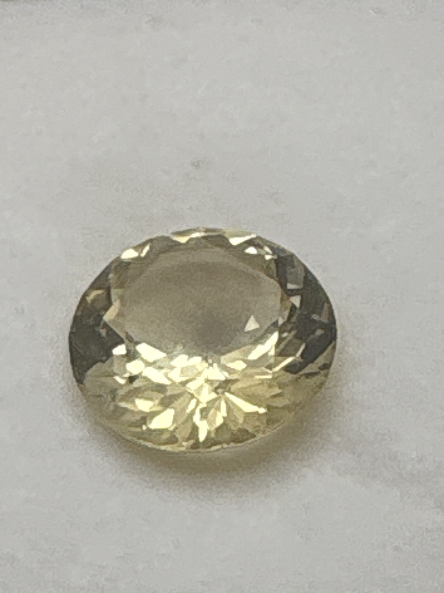

The Gem Drawer › No. 64

A pale champagne round brilliant of an uncommon collector's gem.
| Catalogue no. | #64 |
|---|---|
| As labeled | Scapolite |
| Shape / cut | Round brilliant |
| Weight | 4.99 ct |
| Measurements | Not recorded |
| Colour | Pale champagne/yellow |
| Clarity / condition | Not recorded |
Interested in this stone, or in the collection as a whole? Terry VanWormer can answer questions about it.
Click here to inquireor email Terry directly at maxrebo34@gmail.com